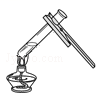
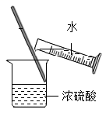
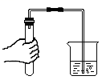

2019年北京市中考化学真题 · 选择题 第1、2、3、4、5题 · 对应解析
1. 空气成分中，体积分数最大的是（ ）
A. 氮气B. 二氧化碳C. 氧气D. 稀有气体
【答案】A
【解析】
【详解】空气的成分按体积计算，大约是：氮气占78%、氧气占21%、稀有气体占0.94%、二氧化碳占0.03%、其它气体和杂质占0.03%。
2. 下列属于非金属元素的是（ ）
A. MgB. ZnC. ClD. Ag
【答案】C
【解析】
【分析】一般来说，元素名称中带“金”字旁的为金属元素（汞和金除外），其他为非金属元素
【详解】A、Mg的元素名称为镁元素，属于金属元素，故不符合题意；
B、Zn的元素名称为锌元素，属于金属元素，故不符合题意；
C、Cl的元素名称为氯元素，属于非金属元素，故符合题意；
D、Ag的元素名称为银元素，属于金属元素，故不符合题意。
3. 生活中一些食物的近似pH如下，其中显碱性的食物是( )
A. 柠檬汁(2.0～3.0)B. 苹果汁(2.9～3.3)
C. 牛奶(6.3～6.6)D. 鸡蛋清(7.6～8.0)
【答案】D
【解析】
【详解】溶液的pH小于7，溶液呈酸性，pH越小，酸性越强；溶液的pH大于7，溶液呈碱性，pH越大碱性越强；pH等于7，溶液呈中性。A. 柠檬汁(2.0～3.0) ，呈酸性； B. 苹果汁(2.9～3.3) ，呈酸性；C. 牛奶 (6.3～6.6) ，呈酸性； D. 鸡蛋清(7.6～8.0) ，呈碱性；选D
4. 下列物质在氧气中燃烧，火星四射、生成黑色固体的是（ ）
A. 铁丝B. 红磷C. 甲烷D. 氢气
【答案】A
【解析】
【详解】A、铁丝在氧气中燃烧，火星四射、生成黑色固体，故符合题意；
B、红磷在氧气中燃烧，冒出大量白烟，放出大量热，故不符合题意；
C、甲烷在氧气中燃烧，发出淡蓝色火焰，放出大量热，故不符合题意；
D、氢气在氧气中燃烧，发出淡蓝色火焰，放出大量热，故不符合题意。
5. 下列操作不正确的是（ ）
A.

加热液体B.
稀释浓硫酸C. 取固体粉末D.

检查气密性【答案】B
【解析】
【详解】A、加热液体时，用酒精灯外焰加热，试管夹夹在试管中上部，试管中液体不超过试管容积的1/3，操作正确，故不符合题意；
B、稀释浓硫酸时，要将浓硫酸慢慢注入水中，并不断搅拌，操作错误，故符合题意；
C、取固体粉末时，将试管平拿，用药匙或纸槽，把固体粉末送到试管底部，慢慢竖起，操作正确，故不符合题意；
D、检查气密性时，用双手捂住试管，将导管伸入水中，观察导管口是否有气泡产生，操作正确，故不符合题意。